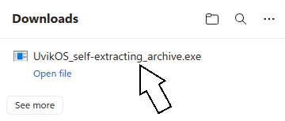
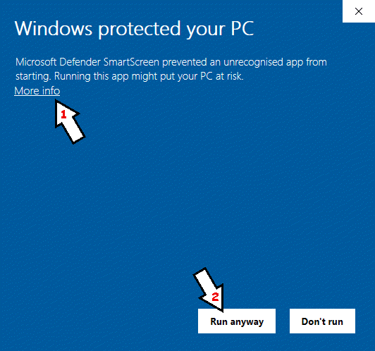
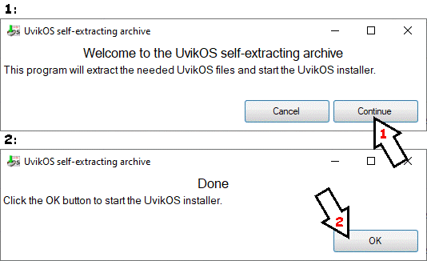

How to Download UvikOS
If you are using Microsoft Edge, click .
First, download the UvikOS self-extracting archive: Download.
When the download finishes, open the downloaded file.

Because UvikOS isn't commonly downloaded and isn't digitally signed, a SmartScreen warning may appear. To bypass this warning, simply click More info, then click Run Anyway.

Then, the UvikOS self-extracting archive program will open. To extract the files needed for UvikOS, click the Continue button. The program will extract the UvikOS files into a folder named ”UvikOS“ next to the self-extracting archive. Once the extraction is complete, click the OK button to start the UvikOS installer.

The program will open the UvikOS installer. If you don't see it, check the taskbar (bottom panel) or open the Install UvikOS file from the opened folder. Then go through the UvikOS installer as per normal.

If you want to save storage space, move the “Start UvikOS” file to another folder, then delete the downloaded file (UvikOS_self-extracting_archive) and the extracted folder.